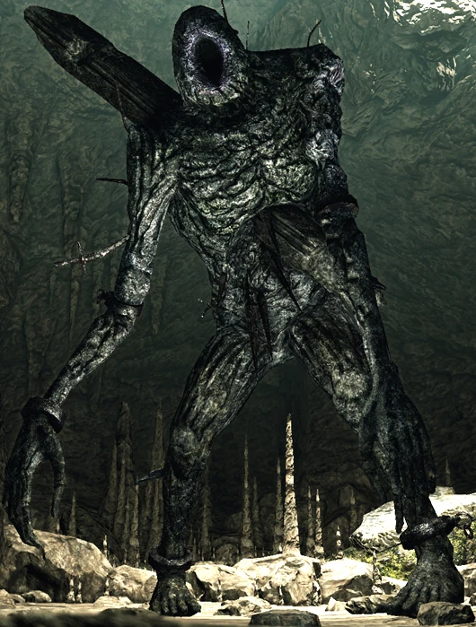
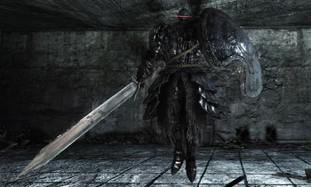
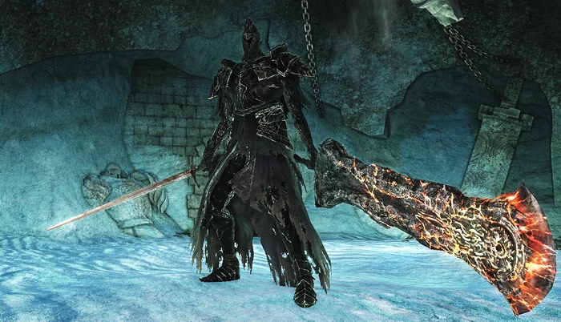

- Undead Asylum:
- A decrepit asylum teeming with undead and guarded by a great demon. It serves as the introductory area for the game.
- Firelink Shrine:
- A lush, green cliff side ruin overlooking a city below. It serves as a central hub and is the first location that is visited after escaping the Undead Asylum.
- Undead Burg:
- A fortified section of a town surrounded by large walls and watchtowers, filled with hostile undead.
- Undead Parish:
- A separate section of the Undead Burg, containing the Undead Church, along with various other buildings.
- Depths:
- A vast, dark sewer system beneath the Undead Burg, containing various tunnels and waterways.
- Blighttown:
- A toxic shantytown, built in a deep, dark swamp.
- Quelaag's Domain:
- A large mound covered in spider webs. It serves as the lair of Chaos Witch Quelaag and her sister.
- The Great Hollow:
- The hollowed out interior of an enormous Archtree, filled with dangerous Basilisks.
- Ash Lake:
- A primordial land covered in Archtrees and bodies of water. Located deep below Lordran, the long-forgotten land is almost lifeless.
- Sen's Fortress:
- A mysterious fort littered with deadly traps. Supposedly built by the ancient gods, it's the only route leading to Anor Londo.
- Anor Londo:
- A vast city located at the apex of Lordran. Once home to the gods, it lies abandoned.
- Painted World of Ariamis:
- A mysterious, bleak and snowy land. Existing as a painting in Anor Londo, it's inhabited by dangerous creatures.
- Darkroot Garden:
- A dark, dank forest located just outside the Undead Parish. Inhabited by living trees, it's also home to the Forest Hunter covenant.
- Darkroot Basin:
- A section of the Darkroot Forest connects back to the Undead Burg. It contains winding cliffside paths, Crystal Golems, and a large lake.
- Valley of Drakes:
- A narrow, treacherous valley located below Firelink Shrine. Guarded by several Drakes, it serves as an intersection to various locations.
- The Catacombs:
- A series of dark, winding tunnels, brimming with undead skeletons, necromancers, and traps.
- Tomb of the Giants:
- A pitch-black cavern deep below the land. Connecting from the Catacombs, it contains colossal skeletal creatures.
- New Londo Ruins:
- A flooded city shrouded in night. Located below Firelink Shrine, this forsaken place is crawling with the ghosts of former residents.
- The Duke's Archives:
- A grand library located at the apex of Anor Londo. Home to Seath the Scaleless and his minions.
- Crystal Cave:
- A vast cavern lined with glittering crystals and invisible bridges. Inhabited by Golems, it's also the location of Seath's source of power.
- Demon Ruins:
- A vast ruin built into the very walls of a lava-flooded cavern, deep below Lordran.
- Lost Izalith:
- A large dome-shaped construct located in the lava lake of the Demon Ruins. The birthplace of the mother of demons and pyromancy.
- Firelink Altar:
- A mysterious altar located deep beneath Firelink Shrine. It serves as a gateway to the Kiln of the First Flame.
- Kiln of the First Flame:
- The dwelling of Gwyn, Lord of Cinder, and the final location in the game. In ancient times, it was where Gwyn famously linked the First Flame and prolonged the Age of Fire.
YOU DIED !
The story of Dark Souls II begins with a human who has become Undead, cursed to never die and doomed to eventually become a Hollow, a zombie-like being with no memories or purpose. The protagonist is also known as the Bearer of the Curse. To break the curse, the undead travels to the fallen kingdom of Drangleic and is tasked by the Emerald Herald with obtaining four Great Souls from powerful Old Ones whose names are long forgotten and forbidden. Once obtained, the Emerald Herald directs the undead to "Seek the King" in the capital. After fighting through the remains of the royal guards, the player encounters the Queen Nashandra, who reveals that the king failed in his duty and fled his kingdom long ago. She asks the protagonist to slay the king.
After speaking to him several times, Cale will give the player the House Key, which unlocks the abandoned mansion in Majula and allowing the player a place to stay. His dialogues say that he is from Mirrah. He recalls that a murderer has escaped from prison there. Cale seems to have lost his memory, but is able to recall he has met a man very similar to the murderer. Cale couldn't recall this man's name, but his stammering is enough for the player to understand he's talking about Creighton of Mirrah. After lighting all the flames on the map he will give you his armor, Cale's Set as a reward and also unlock the trophy/achievement "Curious Map"
Rosabeth of Melfia is a gifted pyromancy student, although she acknowledges she still has much to learn. She constantly talks highly about her teacher, a famed sorcerer from Melfia called Carhillion of the Fold. Rosabeth got fascinated by his sorceries and when Carhillion set off on a journey to Drangleic, she went after him; however, not long after that they got separated. Trying to find his whereabouts, Rosabeth was attacked by a Basilisk on her way to the Shaded Woods. She was able to close the gate that gave access to that area, but not before the Basilisk could use its petrifying breath on her, transforming her into a stone statue still holding the contraption which activated the gate. Eventually, the Bearer of the Curse released her from her petrified state. She then resumed her task of finding her teacher, although she also came to the conclusion that she might be more of a burden to him, thus deciding to keep her distance and suspecting Carhillion actually ditched her when she first lost track of him.
When certain conditions are met, Benhart of Jugo can be summoned as an ally for the Prowling Magus, Looking Glass Knight, Giant Lord, Throne Watcher and Defender, Nashandra and Elana boss fights Benhart is first found near Majula, outside of the Shaded Woods. When approached by the player, he is sitting and contemplating what to do, as the way forward is blocked by the petrified Rosabeth. When Rosabeth is unpetrified by using a Fragrant Branch of Yore, he thanks the player for clearing the way and hopes to the see them again. At this point, one can learn the "Joy" gesture from him, and it will be possible to summon him as an ally before the Prowling Magus and Congregation boss fight, in Brightstone Cove Tseldora. He can then be found next to the bonfire, past the Dragonriders, in Drangleic Castle. He remarks on the discord of the land, before changing locations. He can then be summoned to assist with the Looking Glass Knight encounter. Next, he will move to the ramparts, past The Pursuer boss fight area, in the Forest of Fallen Giants. He will state that he will assist the player in any challenge. He will then remark on the lineage of his weapon and its apparent hidden potential. If the Ashen Mist Heart is possessed, he can be found in the Memory of Orro near his position on the ramparts. He can be summoned to fight the Giant Lord. This is also the spot were he will give the player his equipment if his questline has been completed. Benhart drops the Bluemoon Greatsword upon death. If his sword is taken to Maughlin the Armorer, he will note that the sword is a fake; the true sword being the Moonlight Greatsword.
Drummond can be found in the Memory of Vammar. In order to gain entrance to the memory, one must talk to the Ancient Dragon back in the Dragon Shrine, who will give the player the Ashen Mist Heart. With the Heart in their possession, the player must go to the Forest of Fallen Giants and interact with the Tree of Giants located close to where Pate was found for the first time. The player will meet an exhausted Drummond early in the Memory; he is in the first large room, lying down to the right of the door. If the player talks to him, he will explain the events which led to the war against the Giants. He will also command the player to slay the Giant Lord. After exhausting his dialogue, he will be available for summoning for the fight against the Giant Lord in the Memory of Jeigh. His summon sign is located next to the fog gate. If the player speaks with Drummond, he will order his men to stand down and allow them to pass. The soldiers encountered in the memories from this point forward will not be hostile to the player and will assist them in fighting the Giants. However, if the player attacks a soldier, even accidentally, they will all turn hostile again and will remain hostile for the rest of the playthrough, even if the player speaks to Drummond again. After defeating the Giant Lord, he will give the player the Drangleic Helm, which allows the player to obtain the "Holder of the Fort" achievement/trophy.
When Lucatiel is found for the first time, she will introduce herself and explain her motives for being in Drangleic. She will also offer her assistance to the player during their journey. During her second encounter, Lucatiel will tell the player about her past in Mirrah. She will then take off her mask, revealing her half hollowed appearance, and give the player a Human Effigy. The third time she is met, she tells the player about her fears of losing her memories and of her brother. Lucatiel will explain how he is a better swordsman than her and she confesses that her brother, who is another victim of the curse of undeath, might be in Drangleic. She then gifts the Ring of Steel Protection +1. The fourth time that the player finds Lucatiel, she is very confused and distressed over the curse, and says she would do anything to get rid of it, even if it meant killing the player. After exhausting her dialogue, she will be available as phantom for another boss fight and will move to the next area. Lastly, Lucatiel can be found in a shack at the first bonfire of Aldia's Keep. She will be distressed if the player has not summoned and kept her alive for three boss fights, and begs the player to remember her name, as she may not. Lucatiel will disappear from the game after this encounter. If the player has summoned Lucatiel and kept her alive for three of the four summonable boss fights in the base game, she will thank the player for keeping her sane, and bequeath her armor and sword to the player. This is necessary for unlocking her achievement/trophy.
McDuff is losing his mind, evident by the swinging of his hammer at nothing except open air, and murmurs about a soft, fading ember, revealed to be the Dull Ember when the player next visits his workshop with the item in their inventory. This also may be a reference to lighting the torch in his room. By doing this he'll get up and move to his anvil, allowing access to the Craftsman's Hammer and a piece of Twinkling Titanite. The fact that you acquire the Craftsman's Hammer from the chest he is sitting on could mean he is the legendary Blacksmith mentioned in the item's description. Because of this, he could have been locked away in the cell when the Lost Bastille was originally created, as humans feared powerful people. Why McDuff is in The Lost Bastille is unclear; whether he is an undead inmate, in self-imposed exile or a remnant of the prison staff is unknown, though his situation resembles that of Rickert of Vinheim from Dark Souls.

Gilligan will offer to build a ladder to the section below his above mentioned position in Earthen Peak in return for 2,000 souls, leading to a Pharros' Lockstone and a piece of Twinkling Titanite. After exhausting his dialogue, he will move to Majula and sit next to the deep pit. He will offer to build three ladders, of differing lengths each, down into the pit; the longer the ladder, the more souls he will request. Please note that all the ladders do not connect to platforms and will have to be fallen off in order to reach a destination, resulting in minor fall damage. The first ladder costs 500 souls and will be very short, barely taking players down the pit. The second ladder costs 3,500 souls and will take the player approximately halfway down the pit, near the Grave of Saints. The third ladder costs 12,000 souls and will take the player close to the bottom of the pit, near The Gutter. He will give the player his unique Melu Scimitar as a gift for purchasing the longest and most expensive ladder, which will also unlock the Garrulous Miser Trophy and Achievement.

Name:The Last Gyant
Location:Northern Undead Asylum
Loot: Humanity, Big Pilgrim’s Key, Demon’s Great Hammer
The very first of all Dark Souls bosses that you will have to face is the Asylum Demon. If you chose the Black Fire Bombs as your starting item, then you can kill the Asylum Demon with just 4 bombs. If you didn’t choose the Black Fire Bombs, then you will just have to hack at him slowly until he falls.

Name:Pursuer
Location: Forest of Fallen Giants Iron Keep Drangleic Castle (NG+)
Loot: Various
The Pursuer is a large hulking knight who hunts down those who bear the undead curse, possibly to atone for past sins committed. Wielding an ultra greatsword renowned for being one of the mightiest of its design, the Pursuer will relentlessly stalk its target until slain. It is unknown if the Pursuer served under King Vendrick, as did many other knights, or if it acted off of its own accord.
Name:Dragonrider (Optional)
Location: Heide's Tower of Flame
Loot: Dragonrider Soul
The Dragonriders used to serve in King Vendrick's royal guard long ago. These riders mounted wyverns and caused chaos on the battlefield due to their unparalleled strength.The rank of Dragonrider was reserved for honorable warriors who helped found Drangleic. Together with the King, they crushed the land's former inhabitants and erected a magnificent kingdom upon their graves.
Name:Old Dragonslayer
Location:Cathedral of Blue
Loot:Old Dragonslayer's Soul Old Leo Ring
The Old Dragonslayer is a mysterious figure with little to no available information on him. It is unknown if this is the same Dragonslayer encountered in Anor Londo in Dark Souls, or perhaps an imposter using Ornstein's influence and equipment, or something else entirely.
Name:Flexile Sentry
Location: No-man's Wharf
Loot: Flexile Sentry Soul
The Flexile Sentries were creatures whose duty under King Vendrick was to punish the undead. Soon, Drangleic's dungeons began to overcrowd and Vendrick saw to it that the sentries would deport as many undead as possible and send them to a faraway land.
Name:Ruin Sentinels
Location:The Lost Bastille
Loot: Ruin Sentinel Soul
Creations of the jailer, the Ruin Sentinels are formless souls that haunt distinct suits of armor.They seem to guard The Lost Bastille and Drangleic Castle which, combined with their nature as souls controlling a suit of armor, makes them similar to the Ironclad Soldiers that assumed positions in Drangleic's royal army.
Name:Belfry Gargoyles
Location:Belfry Luna
Loot:Belfry Gargoyle Soul Covetous Gold Serpent Ring +2 (NG+)
These gargoyles are similar in appearance to the Bell Gargoyles from Dark Souls and even share the same battle music. They wield large bidents.
Name:Lost Sinner
Location:Sinners' Rise
Loot:Soul of the Lost Sinner Old Witch Soul (NG+)
The Lost Sinner is a forgotten entity, presumably undead, who imprisoned herself for unknown sins committed long ago. Donning the Penal Set, she lives in constant agony and shame. According to Sweet Shalquoir, she tried to "light" the First Flame, but it's unknown whether this failure is the reason for her self-punishment, or if the attempt was a means of redemption.
Name: Covetous Demon
Location:Earthen Peak
Loot: Covetous Demon Soul
The Covetous Demon was once a man who fell in love with Queen Mytha, but she did not return his affections. He expressed his desire through excessive eating and eventually this gluttony transformed him into a ravenous abomination.
Name:Mytha, the Baneful Queen
Location:Earthen Peak
Loot: Mytha, the Baneful Queen Soul Covetous Silver Serpent Ring+2 (NG+)
Mytha was formerly engaged to the ruler of her kingdom (hypothesized to be either the Old Iron King or, more likely, the Prince of Alken). Unfortunately, he had no affection for her in spite of her beauty and fell in love with another. The knowledge of this drove her mad, causing her to start consuming poisonous substances that would supposedly increase her beauty. Instead, the substances only corrupted her and transformed her into a monster. Subsequently, she was exiled to Earthen Peak. Using the Manikins as servants, Mytha converted her prison castle into a giant machine which pumps more poison into her personal chambers, since, in her monstrous form, it keeps her young and immortal.
Name:Smelter Demon
Location:Iron Keep
Loot:Smelter Demon Soul
The Smelter Demon is similar to the Iron Golem in Dark Souls in that the Demon is a construct made of iron that has been animated through some means. His body is made entirely of iron except for a portion of his chest, which is hollow and exposes a core of flames. The Smelter Demon was responsible for the death of the Iron King, and the fall of his kingdom.
Name:Old Iron King
Location:Iron Keep
Loot:Old Iron King Soul Old King Soul (NG+)
The King of an ancient kingdom once ruled from the Iron Keep, an impenetrable fortress made out of solid iron. He was obsessed with creating an indomitable empire that would last for centuries, but his wishes of longevity and impregnability would eventually lead to his downfall as his beloved castle began to sink into the earth and molten iron began to melt the walls, eventually consuming his kingdom. He was believed to have been killed by the Smelter Demon and his soul possessed by the great evil that lurked in the flames.
Name:The Rotten
Location:Black Gulch
Loot:Old Dead One Soul (NG+) Pharros' Lockstone (sever left arm)
The Rotten is in the Black Gulch. After seemingly failing to put a statue’s head back on its body, he becomes enraged and proceeds to focus on the player.
Name:Scorpioness Najka
Location:Shaded Woods
Loot:Scorpioness Najka's Soul Southern Ritual Band +2 (NG+)
Najka and her betrothed, Manscorpion Tark, were created long ago by an unnamed master who has long since disappeared. It is implied that the two were experiments, similar to The Duke's Dear Freja, and that their creator was either Duke Tseldora or Seath the Scaleless himself. Najka and Tark are the only two of their kind that speak the human tongue, though a ring is required to understand them.
Name:The Duke's Dear Freja
Location:Brightstone Cove Tseldora
Loot:Soul of the Duke's Dear Freja Old Paledrake Soul (NG+)
She was most likely the pet of Duke Tseldora who was fascinated by spiders. In Lord's Private Chamber the player can find a small cage with torn hole in it, likely the place where the Duke kept her. At some point Freja become host of a mysterious entity called the Writhing ruin that grew in power, feasting on the wealth of twisted souls found in the land. This was most likely the thing that caused her transformation into her current form.
Name:Mirror Knight
Location:Drangleic Castle
Loot:Looking Glass Knight Soul Ring of Steel Protection+2 (NG+)
The Knight served as Vendrick's foreboding lieutenant, wielding a Thorned Greatsword and a mirrored shield that had the ability to tap into other worlds. Before the King's fall and the collapse of his kingdom, the knight would serve as a test to warriors who wished to serve under the king. After Vendrick went into hiding in the Undead Crypt, the knight from then on served as the first line of defense against those attempting to pursue the now hollowed king. It continues to challenge individuals who cross its path.
Name:Darklurker
Location:Dark Chasm of Old
Loot:Darklurker Soul
The Darklurker can be fought only through the Pilgrims of Dark covenant. The player will be transported to its arena once all beacons in the Dark Chasm of Old are lit and all three dungeons have been cleared. In order to access this boss, one must simply clear a chasm as normal once all of the conditions are met. This may be jarring, as the player may end up fighting it unprepared upon lighting the third beacon and clearing the third chasm.
Name:Demon of Song
Location:Shrine of Amana
Loot:Demon of Song Soul Key to the Embedded
The Demon of Song's origins are unknown but it was originally sealed inside the Shrine of Amana due to it developing a taste for human flesh. However, after the priestesses tasked with maintaining the seal died or became hollow, the demon was able to escape its prison. Its name comes from its ability to mimic the song of the Milfanito, in order to lure prey into its lair.
Name:Velstadt, the Royal Aegis
Location:Undead Crypt
Loot:Soul of Velstadt Royal Soldier's Ring+2 (NG+)
Velstadt was King Vendrick's right-hand man, along with Raime, and one of his most loyal knights as well as the Commander of his forces. At some point, Velstadt and Raime quarreled, ending with Raime being declared a traitor and leaving the King's service. Velstadt would always be by his king's side and followed him to the Undead Crypt when he fled Drangleic Castle. Despite Vendrick's hollowed state, Velstadt remains, protecting his liege and serving as the king's last line of defense.
Name:Vendrick
Location:Undead Crypt
Loot:-
Vendrick, the once great king of Drangleic, built his mighty kingdom on the ruins of the other realms that preceded his, and on the souls of the Great Ones. With the help of his brother, Lord Aldia, Drangleic prospered. The king favoured strength of arms, and soldiers who would stake their every battle on strength alone. Sorcery appears to have been tolerated, but the king held a low opinion of miracles.
Name:ANCIENT DRAGON
Location:Dragon Shrine
Loot:Ashen Mist Heart Soul of a Giant Petrified Dragon Bone
Little is known of the mysterious dragon dwelling atop the Dragon Shrine. It offers the Bearer of the Curse the Ashen Mist Heart, allowing them to peer into the memories of things long deceased. Ironically, this very item casts doubts about the dragon's true identity and origins. It can be used in Freja's arena to enter the memory of an Ancient Dragon, where one can find the dragon's soul. The Ancient Dragon atop the Shrine however, upon defeat, will drop a Soul of a Giant.
Name: Giant Lord
Location:Memory of Jeigh
Loot:Giant Lord Soul Giant's Kinship Ring of Giants+2 (NG+)
The Giant Lord is the king of all Giants. After his kingdom was invaded by King Vendrick, who was under the influence of Nashandra, the Giant Lord invaded Drangleic to avenge his losses, and to retrieve the prize that Vendrick stole from him. Possessing a will of iron, the giants laid siege to Drangleic in a war that lasted for generations, and laid waste to the once proud kingdom. Eventually the Giant Lord was defeated by an unknown hero, and the giants retreated, crossing the sea to return home. The Giant Lord himself, broken and beaten, was dragged beneath the fort where he fell, and imprisoned there.
Name:Throne Watcher and Defender
Location:Throne of Want
Loot:Throne Watcher Soul Throne Defender Soul Ring of the Evil Eye +2 (NG+)
The Throne Watcher and Defender are fought as a pair. The Defender is a heavily armored warrior while the Watcher is lighter and more agile, both wield a shield and a greatsword.

Name:Nashandra
Location:Throne of Want
Loot:Soul of Nashandra
A tall humanoid creature wielding a long scythe in her right hand. Her left hand emanates a purple light that can become an energy beam or cause an explosion when she puts it near her chest. Her legs are covered by a skirt made of a black goo filled with bones. She can also summon four black fountains that curse those who stand near them. She can speak and can change into a more human, yet still gigantic, form.
Name:Aldia, Scholar of the First Sin
Location:Throne of Want
Loot:-
Aldia is the elder brother of King Vendrick, and aided his brother in founding the kingdom of Drangleic. He secluded himself in his manor, searching for secrets of life, viewing the Undead as the key to finding it. For his reverence of the Undead, Aldia was shunned by Vendrick, banished to his Keep forever. People who were invited to his manor commonly disappeared and were replaced with malformed beasts. The Southern and Northern Ritual Bands were created by Aldia and his acolytes after cruel, horrible experiments were performed on these people. Many valuable objects came out of Aldia's Keep, including the Sunset Staff, the Spitfire Spear, Soul Geyser, Unleash Magic, and Forbidden Sun.
Name:Elana, the Squalid Queen
Location:Dragon's Sanctum
Loot:Soul of Elana, Squalid Queen
Elana, the Squalid Queen, like Nashandra, was a fragment of Manus, Father of the Abyss, supposedly a fragment representing the trait of wrath. Regaining her form, she became Elana, and later wife of the Sunken King. It is unknown if she designed to betray the Sunken King or if she truly loved him, but one day Sir Yorgh and his Drakeblood Knights besieged Shulva, defeating the Sunken King and awakening Sinh, the Slumbering Dragon, who then let forth a toxic cloud which annihilated the whole city.

Name:Sinh, the Slumbering Dragon
Location:Dragon's Rest
Loot:Soul of Sinh, the Slumbering Dragon
Sinh was a long-sleeping dragon who was found and worshiped by the people of Shulva, Sanctum City. The Sunken King built the city itself around Sinh's resting place, and created Dragon's Sanctum to protect the dragon from intruders. The Sanctum Soldiers guarded the dragon while the Sanctum Priestesses attempted to continue its slumber with their song.
Name:Afflicted Graverobber, Ancient Soldier Varg, and Cerah the Old Explorer
Location:Cave of the Dead
Loot:Twinkling Titanite ×3 Petrified Dragon Bones ×3 Titanite Slab ×1
Cerah the Old Explorer wears Lucatiel's Mask, Black Leather Armor, Leather Gloves and the Leather Boots. He also wields the Dragonslayer Greatbow and an Estoc.

Name:Brume Tower
Location:Chasm of the Abyss
Loot:Soul of the Fume Knight Soul of Nadalia, Bride of Ash
Raime was one of Drangleic's most distinguished knights. He used his favorite bird, the black raven, as his sigil. He was considered by Vendrick as his left arm and was one of his most trusted advisors along with Velstadt. However, he eventually clashed with Velstadt and was deemed a traitor by Vendrick.
Name:Sir Alonne
Location: Memory of the Old Iron King
Loot:Soul of Sir Alonne Alonne's Set (piece)
Sir Alonne is a wandering swordsman and formerly the Iron King's right-hand man. Alonne came from the east and chose to serve the Iron King and help establish his own kingdom. When the Iron King was at the peak of his rule, Sir Alonne left him to travel the lands for an unknown reason. For his service the Iron King bestowed Alonne's name to his knights.
Name:SMELTER DEMON (IRON PASSAGE)
Location:Iron Passage
Loot:Smelter Demon Soul
The Smelter Demon is similar to the Iron Golem in Dark Souls in that it is a construct made of iron that is given life through some means. Its body is made entirely of iron except for a portion of its chest, which is hollow and exposes a core of magical flame. It is mostly the same as the Smelter Demon from the Iron Keep, with some visual differences.
Name:Aava, the King's Pet
Location:Frozen Eleum Loyce
Loot:Soul of Aava, the King's Pet
Aava served the Ivory King, along with Lud, Zallen and four other beasts. Each was conferred a specific duty. Aava's was the guardianship of the King's beloved child of Dark.
Name:Burnt Ivory King
Location:The Old Chaos
Loot:Soul of the Ivory King
The Ivory King was once the ruler of Eleum Loyce. His origins are said to trace back to the kingdom of Forossa, where he served as a high ranking knight. The Ivory King was described as a compassionate and strong ruler, always the first to swing his sword in times of need for the good of his people or for his homeland. When a lost child of Dark named Alsanna sought to sustain herself using the powerful king, he granted her protection and comfort despite possibly knowing her true intentions.
Name:Lud and Zallen
Location:Frigid Outskirts
Soul of Lud Soul of Zallen
Lud and Zallen served the Ivory King, along with five other beasts. Each was conferred a specific duty. Lud and Zallen's was the mercy killing of exiles.
Classes in Dark Souls determine the starting Stats and Equipment of the player. There are 10 Classes in Dark Souls that the player can begin the game with. They are listed below: Classes do not determine what weapons, items, armor, or spells your character is able to use, they only determine what your character starts the game with. As you progress through the game and raise your levels, your character can potentially take up any role regardless of class. In addition to choosing a class, players can choose a gift to begin the game with. All gifts can be found in the game later on, but taking one here can let the player enjoy a benefit they wouldn't normally have until much later. A first time player should be careful about choosing gifts that will let them enter end-game areas from the start of the game such as the Master Key, since they could potentially end up stranded in a very difficult area without the knowledge or equipment to get back out. Note that the Master Key is infinitely reusable, and the Thief starting class begins the game with one already. Taking a second Master Key as a Thief is a waste of a gift. The cost of raising a level increases as your character's level increases. The amount of souls each level costs is the same for all classes, though classes begin at different levels. For example, a character that starts at level 1 may find leveling up to be extremely affordable, but the character who starts at level 10 didn't have to pay anything to get to that point. When the level 1 character reaches level 10, going from 10 to level 11 will cost exactly the same amount of souls as it would for the character who started at level 10. Because of this, starting at a lower level actually ends up costing more overall, however the player will be able to put their stats exactly where they want them instead of starting with a more pre-determined kit. The starting level of a character ignores the Resistance stat, so characters with high resistance start at lower levels than they would normally have otherwise.


Sorcerer
|
|
8 |
|
|
8 |
|
9 |
|
|
|
15 |
Pyromancer
|
|
10 |
|
|
11 |
|
12 |
|
|
|
10 |
Cleric
|
|
11 |
|
|
9 |
|
12 |
|
|
|
8 |
Deprived
|
|
11 |
|
|
11 |
|
11 |
|
|
|
11 |
| Class Characteristics | LV |
VIT |
ATT |
END |
STR |
DEX |
RES |
INT |
FTH |
HUM |
TOT |
| Warrior | 4 | 11 | 8 | 12 | 13 | 13 | 11 | 9 | 9 | 0 | 86 |
| Knight | 5 | 14 | 10 | 10 | 11 | 11 | 10 | 9 | 11 | 0 | 86 |
| Wanderer | 3 | 10 | 11 | 10 | 10 | 14 | 12 | 11 | 8 | 0 | 86 |
| Thief | 5 | 9 | 11 | 9 | 9 | 15 | 10 | 12 | 11 | 0 | 86 |
| Bandit | 4 | 12 | 8 | 14 | 14 | 9 | 11 | 8 | 10 | 0 | 86 |
| Hunter | 4 | 11 | 9 | 11 | 12 | 14 | 11 | 9 | 9 | 0 | 86 |
| Sorcerer | 3 | 8 | 15 | 8 | 9 | 11 | 8 | 15 | 8 | 0 | 82 |
| Pyromancer | 1 | 10 | 12 | 11 | 12 | 9 | 12 | 10 | 8 | 0 | 84 |
| Cleric | 2 | 11 | 11 | 9 | 12 | 8 | 11 | 8 | 14 | 0 | 84 |
| Deprived | 6 | 11 | 11 | 11 | 11 | 11 | 11 | 11 | 11 | 0 | 88 |